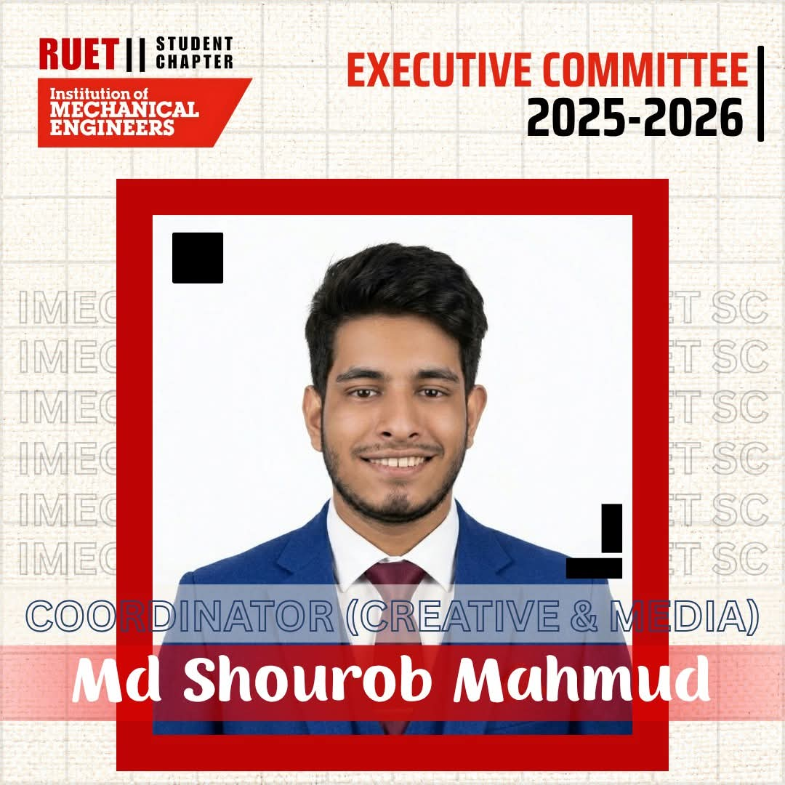

I am a Mechanical Engineering undergraduate at Rajshahi University of Engineering & Technology (RUET),
with a strong academic background and interests in research, engineering design, IoT systems, robotics,
composite materials, and sustainable technologies. My long-term academic goal is to pursue graduate research
in advanced materials, smart manufacturing, and intelligent engineering systems.
3.91
CGPA / 4.00
3+
Engineering Projects
1 Month
Industrial Attachment
IMechE
Leadership Role
Education
B.Sc. in Mechanical Engineering
Institution: Rajshahi University of Engineering & Technology (RUET)
Title: Development of Bamboo-Jute Fiber Reinforced Epoxy Hybrid Composites Modified with
Nanoclay Nanoparticles for Enhanced Mechanical, Thermal, and Moisture Resistance Properties.
Research Objectives
Improve mechanical properties of natural fiber-reinforced epoxy composites.
Enhance thermal stability using nanoclay reinforcement.
Reduce moisture absorption of bamboo-jute hybrid composites.
Explore sustainable engineering material applications.
Methodology
Fiber treatment and surface modification.
Hand lay-up and compression molding fabrication.
Mechanical testing and property evaluation.
SEM, XRD, and thermal characterization.
Research Interests
Natural Fiber Reinforced Polymer Composites
Nanoclay Modified Epoxy Composites
Sustainable Engineering Materials
Materials Characterization
Engineering Projects
Smart Watering System
Designed and developed an IoT-based Smart Watering System using the Seeed Studio XIAO ESP32-C6 microcontroller,
soil moisture sensing, rain detection, OLED monitoring, relay-based pump control, and Blynk IoT cloud integration.
Designed a security access system using Arduino, RFID module, keypad, relay, LCD display, and solenoid lock.
ArduinoRFIDKeypadLCDSolenoid Lock
Gas Leakage Detection System
Developed a gas leakage detection system using MQ-2 gas sensor, Arduino, GSM module, buzzer, LEDs, and LCD display.
ArduinoMQ-2 SensorGSM AlertLCDSafety Monitoring
Technical Skills
Engineering Software
ANSYS
SolidWorks
MATLAB
Programming & IoT
Arduino Programming
ESP32 Development
C/C++
Blynk IoT
Research & Laboratory Skills
Composite Fabrication
Mechanical Testing
SEM Analysis
XRD Analysis
Industrial Attachment
Completed a one-month industrial attachment at the
Bangladesh Industrial Technical Assistance Center (BITAC), Dhaka,
under the Advanced Training & Innovation Complex (ATIC).
The program provided comprehensive hands-on training in modern manufacturing,
CNC machining, industrial metrology, heat treatment, renewable energy technologies,
and engineering workshop practices.
CNC Machining and Manufacturing Processes
Industrial Metrology and Precision Measurement
Heat Treatment and Materials Engineering
Renewable Energy Technologies
Industrial Automation and Production Systems
Engineering Workshop Practices
Advanced Training & Innovation Complex (ATIC)
Gained exposure to modern manufacturing technologies and practical engineering training facilities.
CNC Manufacturing Laboratory
Received practical training on CNC machining, machine operation, and industrial production techniques.
Renewable Energy Laboratory
Explored renewable energy technologies, including wind energy systems and engineering applications.
Certificate of Completion
Official certificate awarded by BITAC recognizing successful completion of the Industrial Attachment Program
at the Advanced Training & Innovation Complex (ATIC), Dhaka.
Leadership & Professional Activities
Served as the Coordinator (Creative & Media) of the
Institution of Mechanical Engineers (IMechE) RUET Student Chapter.
This leadership position provided opportunities to coordinate technical events,
develop promotional content, manage digital communication, and collaborate with multidisciplinary teams.
Technical Event Planning and Coordination
Creative Design and Digital Media Management
Engineering Workshop Promotion
Professional Networking and Communication
Student Engagement and Team Collaboration
Leadership and Project Management

Coordinator (Creative & Media)
Led creative and media activities for IMechE RUET Student Chapter, including event publicity,
promotional content development, social media management, and engineering event coordination.
Publications & Academic Output
Manuscript Under Preparation
Currently preparing undergraduate thesis work for future conference or journal publication.
This section will be updated with publications, DOI links, conference papers, posters, and research outputs.